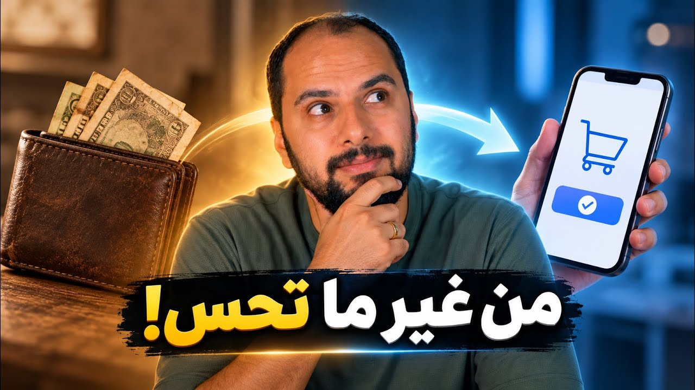

فلوس وتكنولوجيا
ازاي التكنولوجيا غيرت علاقتك بالفلوس؟
من كارت BankAmericard اللي اتبعت في البريد سنة 1958، لـM-Pesa في Kenya وRobinhood وAcorns: التكنولوجيا المالية بتعمل حاجة واحدة، بتهد الحواجز بينك وبين الفلوس. والسؤال: بتسهّل عليك إيه، وإيه لحظة التفكير اللي بتلغيها؟

شغّل الحلقةأنا متعود أغيّر تليفوني كل سنتين، وبسبب السفر كنت بشتريه من برّه عشان فرق السعر. لكن السنة اللي فاتت، مع تغييرات الجمارك، فرق السعر ده اختفى، فقررت أغيّره كل 3 أو 4 سنين. قرار عقلاني جدًا، صح؟
لحد ما ظهر قدامي عرض من تطبيق بيقولي بكل بساطة: قسّط تليفونك الجديد على 15 شهر، من غير مقدم، ومن غير فوائد، ومن غير أي رسوم. وفي نص ساعة بس، قراري العقلاني بتاع تأجيل الشراء اتبخّر، واشتريت التليفون الجديد.
والموضوع ما بقاش واقف على تليفون أو تذاكر طيران وسفر. في 2025 شركة DoorDash أعلنت إنك ممكن تطلب وجبات وتقسّطها على 4 دفعات.11 ولو واخد بالك، التكنولوجيا هنا غيّرت سؤال مهم جدًا في دماغنا: بدل «يا ترى أنا مستعد أدفع المبلغ ده؟» بقى السؤال أسهل بكتير: «هو أنا معايا أول قسط؟».
لكن على الجانب التاني، نفس التكنولوجيا دي خلّت الاستثمار أسهل من زمان بكتير؛ دلوقتي ممكن تستثمر في الأسهم من على موبايلك وبمبلغ صغير. عشان كده المقال ده مش عن التقسيط ولا عن الاستثمار، ده عن فكرة أعمق: إزاي التكنولوجيا المالية غيّرت علاقتنا بالفلوس. وفي آخره هتكون فهمت الشكل الجديد لعلاقتك بالفلوس، والأهم إزاي تستخدم التكنولوجيا دي لصالحك.
إزاي كارت في صندوق البريد غيّر قرار الشراء؟ 1:25
سبتمبر 1958، في مدينة اسمها Fresno في California: آلاف الناس فتحوا صناديق البريد بتاعتهم الصبح ولقوا حاجة غريبة، credit card باسمهم. مش إعلان، ومش استمارة تقديم؛ الـcard نفسه شغال، وتقدر تنزل تشتري بيه في نفس اليوم.
عشان تفهم ليه ده كان صدمة وقتها، لازم تعرف شكل الحياة قبله. لو أنت عايش في أمريكا سنة 1958، كان عندك طريقتين للدفع: يا تدفع cash، يا لو أنت عميل معروف للمكان، يطلع لك card ورق تستخدمه عنده، وآخر الشهر تروح تصفّي حسابك، حاجة كده زي كراسة الديون اللي كانت عندنا زمان. يعني لو بتتعامل مع مطعم وبقال وبنزينة بالأجل، هتمشي ومعاك cards كتير جدًا في جيبك. وبالنظام ده البنوك كانت برا اللعبة تمامًا.
وهنا ظهر Joe Williams (جو ويليامز) من Bank of America، وكانت فكرته إنه يستبدل كل النظام ده بـcard واحد يطلع من البنك وتقدر تستخدمه في كل مكان تقريبًا. والأهم إنك لو مش قادر تدفع الحساب آخر الشهر، تدفع جزء وتسيب الباقي للشهر اللي بعده بفائدة. الفكرة كانت ثورية، بس قدامها مشكلة: ليه أي store يقبل card مش منتشر، وهو عنده الـcard بتاعه اللي بيوزعه على العملاء بتوعه؟ وليه أي عميل يهتم بـcard الـstores مش بتقبله؟
Williams قرر يحل المشكلتين في نفس اليوم، بحركة اتعرفت بعد كده باسم Fresno Drop: البنك أقنع أكتر من 300 store في المدينة إنهم يقبلوا الـcard، ويوم 18 سبتمبر رمى حوالي 60,000 card في صناديق البريد للعملاء بتوعه.1 تخيّل واحد يصحى الصبح يلاقي في صندوق البريد مبلغ $300 أو $500 يقدر يستخدمه في stores كتير في المدينة، من غير ما يطلب ولا يقدّم على ورق.
وقتها ما كانش فيه machines زي اللي بنستخدمها دلوقتي. الـcard كان ورق مقوّى، والموظف يحطه في machine ومعاه إيصال ويضغط عليه، فتتطبع بيانات الـcard البارزة على الإيصال، والمشتري يمضي وخلاص. التاجر ياخد فلوسه من البنك، والدين يبقى بين المشتري والبنك. ودي بالضبط اللحظة اللي الـcards اتحولت فيها من بديل للـcash أو لحساب البقال، لـcredit جاهز في جيبك. مش محتاج تقنع حد يسلفك؛ القرار كله اتضغط في لحظة واحدة: طلّع الـcard، اشتري، وحاسب بعدين.
على الورق الفكرة كانت هتنجح، لكن الناس استخدمت الـcards أكتر من المتوقع، وناس ما دفعتش، وcards اتسرقت. وفي الآخر البنك اكتشف إنه خسران حوالي $9,000,000، ودي كانت مبالغ كبيرة جدًا وقتها، وJoe Williams اضطر يسيب البنك.12 بعدها البنك بدأ يصلّح الأنظمة ويحارب الاحتيال، وبعد سنين المشروع بدأ يكسب. وبعد حوالي 20 سنة، الـcard ده أخد اسم صغير ينفع يتقال في أي بلد في العالم: Visa.2
لما الموبايل بقى بنك: إيه اللي حصل في Kenya؟ 4:23
كل ده حصل عشان البنك بيحاول يسهّل على الناس الاقتراض. طب لو المشكلة مش إن الاقتراض صعب؟ لو البنك نفسه مش قادر يقدّم خدماته لكل الناس؟
بعد حوالي 50 سنة من تجربة Bank of America، كان في Kenya مشكلة مختلفة تمامًا: بالنسبة لملايين الناس، الخدمات البنكية نفسها ما كانتش واصلة لهم بشكل كافي. لكن كان فيه حاجة بتنتشر بسرعة: الموبايل، بس مش الـsmartphone، مجرد تليفون بسيط للمكالمات والرسائل.
في سنة 2005، فريق من Vodafone وSafaricom بدأ تجربة صغيرة على حوالي 500 شخص بس.3 الفكرة كانت إن الناس اللي واخدة قروض، بدل ما تروح تسدد الأقساط cash، تدفعها بالموبايل. لكن بعد ما التجربة بدأت، الفريق لاحظ إن الناس بدأت تخترع استخدامات غير اللي المنتج اتصمم عشانها: بدل ما يسددوا قروض، بقوا بيبعتوا فلوس لبعض.
والسبب مفهوم. قبلها، لو فيه عامل في مدينة عاوز يبعت فلوس لأهله في قرية بعيدة، كان من الطرق المتاحة إنه يدي الـcash لسواق أتوبيس أو لحد مسافر. فلوس حقيقية بتسافر في جيب شخص عشان توصل لشخص تاني، وده بياخد وقت، وممكن تتسرق.
وفي وسط التجربة، زي ما الحكاية بتتحكى، حصل موقف لخّص الفكرة كلها: واحدة من المشتركات جوزها اتسرق وهو بعيد عن البيت، فلوسه راحت ومحتاج أجرة الأتوبيس عشان يرجع، فمسكت موبايلها وبعتت له فلوس.13 ما تفكرش فيها بعقل النهارده، وإحنا بنبعت الفلوس في ثانية بـInstaPay أو بأي طريقة دفع تانية؛ وقتها كان قدام جوزها حل من الاتنين: يا يطلب من الناس ومش عارف هيدّوله ولا لأ، يا مراته تسافر له بنفسها. والاختراع ده لأول مرة خلّى الفلوس توصل من غير ما صاحبها يتحرك.
ومن هنا الفريق فهم إن الناس مش محتاجة طريقة تسدد بيها قرض؛ محتاجة طريقة تبعت وتستقبل فلوس وتستخدمها من غير ما البنك التقليدي، اللي مش قادر يوصل للكل، يكون موجود في الصورة. عشان كده لما الخدمة اتطلقت رسمي في Kenya، الرسالة كانت مباشرة جدًا: SEND MONEY HOME.4 تشحن cash عند وكيل قريب منك، القيمة تظهر على موبايلك وتبعتها لشخص تاني، وهو يستلمها من وكيل قريب منه. كل ده من تليفون مش متوصل بالـInternet أصلًا.
بالنسبة لناس كتير، إزالة الحواجز دي ما كانتش فخ؛ كانت حرية أكتر وسيطرة أكبر على فلوسهم. والأثر ما وقفش عند سهولة إرسال الفلوس: دراسة نُشرت في Science سنة 2016 قدّرت إن انتشار M-Pesa ساعد حوالي 194,000 أسرة في Kenya تخرج من الفقر، وساعد أكتر من 185,000 امرأة ينتقلوا من الزراعة لأعمال تجارية والبيع بالتجزئة.5 يعني التكنولوجيا هنا ما سهّلتش الدفع بس، دي فتحت لناس فرصة اقتصادية ما كانتش متاحة لهم قبل كده.
هل طريقة الدفع بتغيّر المبلغ اللي مستعد تدفعه؟ 7:26
لكن لما التكنولوجيا بتخلي التعامل مع الفلوس أسهل، هي بالتبعية بتخلي صرفها أسهل. فالسؤال الأهم: سهولة الدفع بتغيّر بس الطريقة اللي بندفع بيها، ولا ممكن تغيّر قرارنا نفسه؟
مجموعة من الباحثين في MIT اختبروا السؤال ده بطريقة مختلفة: جابوا ناس عاوزة تشتري تذاكر لمباراة Boston Celtics، ومش أي مباراة: دي كانت آخر مباراة في الموسم، والتذاكر كانت sold out، يعني لو أنت مشجع حقيقي، التذكرتين ليهم قيمة كبيرة جدًا عندك. فتحوا عليهم مزاد، ومن غير ما المشاركين يعرفوا، قسموهم لمجموعتين: مجموعة هتدفع cash، والتانية هتدفع بـcredit card. نفس المباراة ونفس التذاكر ونفس المشجعين تقريبًا؛ الاختلاف الوحيد طريقة الدفع.
والفرق ما كانش بسيط خالص. الناس اللي كانت هتدفع cash، متوسط أعلى مبلغ مستعدين يدفعوه كان حوالي $28.50، أما اللي كانت هتدفع بالـcard فالمتوسط نط لحوالي $60.612 مش 10% زيادة ولا 20%؛ أكتر من الضعف، فرق حوالي 113% لنفس التذكرة. والـcard ما خلاش الكراسي أقرب ولا المباراة أهم؛ الحاجة الوحيدة اللي اتغيّرت هي الطريقة اللي الفلوس هتخرج بيها من إيدك.
التجربة كشفت إن في ظروف معينة، طريقة الدفع نفسها ممكن تأثر على تقييمك للحاجة. وده يرجعنا لأول المقال: لما بتطلّع المحفظة وبتشوف الفلوس وهي بتخرج من إيدك، فيه لحظة احتكاك واضحة بتحس فيها بـ«وجع الدفع». لكن لو نفس المبلغ قدامك على الموبايل، بـtap واحدة على Apple Pay أو على الـmachine، ما فيش فلوس اتعدّت قدام عينك.
Robinhood: لما الاستثمار بقى بضغطة زرار 9:11
طيب، لحد دلوقتي السهولة دي استخدمناها عشان نبعت فلوس أو نستلف أو نشتري. ما ينفعش ناخد نفس السهولة ونفس الموبايل ونفس الزرار ونستخدمها عشان تكتر فلوسنا بدل ما تقللها؟
في سنة 2013 شابين أسسوا شركة بفكرة بسيطة.7 وقتها الاستثمار بالنسبة لناس كتير كان معناه حساب في شركة وساطة، وعمولات على كل معاملة، وشاشات معقدة محتاجة خبير عشان يفهمها. عشان كده سمّوا الشركة Robinhood ولعبوا اللعبة بالعكس: ما فيش عمولات، ما فيش حد أدنى، وكل تجربة شراء السهم بتخلص من الموبايل.
والتطبيق غيّر إحساس الاستثمار نفسه: استبدل لغة البورصة الجافة بتصميم مريح وألوان جذابة، ولما تعمل أول trade ليك يحتفل بيك كأنك خلّصت level في لعبة. وسهّلوها أكتر بميزة Fractional Shares: ما بقاش لازم يكون معاك تمن سهم كامل، ممكن تبدأ بـ$5 وتشتري جزء من سهم في شركة عملاقة.
والنتيجة: ملايين الناس فتحوا حسابات في Robinhood، وأكتر من نصهم كان ده أول حساب استثماري يفتحوه في حياتهم.7 ناس كتير جدًا دخلت البورصة لأول مرة من موبايل في جيبها.
إيه اللي كان ورا زرار BUY في أزمة GameStop؟ 10:20
في بداية 2021، السهولة دي كلها دخلت اختبار ما كانش حد مستعد له. كان فيه شركة اسمها GameStop بتبيع ألعاب فيديو، وعلى موقع Reddit، وتحديدًا في مجتمع WallStreetBets، مستثمرين أفراد كتير قرروا يتفقوا مع بعض إنهم يشتروا أسهم GameStop، فالسهم طلع طلعة كبيرة جدًا: في أقل من 3 أسابيع طلع من $20 لـ$347، وبعدها $480، يعني أكتر من 1,600% ارتفاع في أيام.8
والقصة بقت في كل مكان: التلفزيون وTwitter والأخبار، وده خلّى ملايين الناس تفتح التطبيق البسيط وتدوس على الزرار الأخضر اللي عليه كلمة BUY. لحد يوم 28 يناير، لما الناس اتفاجئت إنها ما تقدرش تشتري سهم GameStop: تقدر تبيع الأسهم اللي معاك، لكن ما تقدرش تشتري. وهنا الـInternet انفجر حرفيًا: إزاي تطبيق شعاره إنه بيفتح الاستثمار لكل الناس يمنعهم يشتروا في أهم لحظة؟ ونظريات المؤامرة انتشرت في كل مكان.
لكن السبب الحقيقي كان مستخبي ورا شاشة التطبيق. أنت لما بتضغط BUY من على تليفونك بتشوف مجرد زرار، لكن وراه نظام مالي كامل: شركة وساطة، وجهة بتنفّذ الصفقات، والأهم ضمانات مالية ضخمة لازم تتدفع لحد ما الصفقة تتم. ومع الجنون اللي حصل في أسهم GameStop، المبلغ المطلوب كضمانات ارتفع بشكل ضخم، لدرجة إن طلبات الضمانات من Robinhood وصلت لحوالي $3 billion.9 بالنسبة للمستخدم البسيط القصة كانت: دوست على زرار BUY وما اشتغلش. لكن تحت الزرار كان فيه مليارات الدولارات ومخاطر ما حدش كان شايفها.
ودي تقريبًا المفارقة كلها في Robinhood: عملت إنجاز حقيقي، شالت حواجز العمولات والتعقيد ودخّلت ملايين الناس للسوق، لكن سهولة الوصول لحاجة معقدة ما بتخليش الحاجة نفسها سهلة. السوق لسه معقد، والسهم ممكن يخسر، وفيه أنظمة كاملة شغالة في الخلفية. ولما التكنولوجيا بتشيل الحواجز، أحيانًا بتشيل معاها اللحظة اللي كانت بتجبرك تقف وتفكر.
Acorns: إزاي الفكة بقت استثمار؟ 12:23
طب الناس اللي مش بتعرف تحوش أصلًا، التكنولوجيا عملت لهم إيه؟ في سنة 2012، Jeff Cruttenden (جيف كروتندن) أخد باله إن زمايله نفسهم يستثمروا بس خايفين، لأن الاستثمار بالنسبة لهم محتاج فلوس كتير وقرارات وعمولات. فراح لأبوه اللي شغال في المجال وسأله: إزاي نخلي شاب ما عندوش فلوس كتير يستثمر دلوقتي من غير ما يستنى لما يجيله مبلغ كبير؟ بدل ما نطلب منه ياخد قرار كبير ويقول «هحط $500 في البورصة»، ليه ما نخليش الاستثمار يحصل بمبالغ قليلة جدًا لدرجة إن القرار نفسه ما يبقاش مخيف، أو نخليه يحصل أوتوماتيك؟
وهنا أسسوا تطبيق اسمه Acorns، وفكرته مرتبطة بحاجة بنعملها كل يوم. تخيّل اشتريت قهوة بـ$3.40: التطبيق يقرّب الرقم لـ$4 وياخد الـ$0.60 فكة دي ويسجّلها. تشتري حاجة بـ$8.70، ياخد الـ$0.30. ولما الفكة تتجمع وتوصل لـ$5 مثلًا، التطبيق يحوّلها تلقائي ويشتري لك بيها أجزاء من صندوق استثماري.10 يعني أنت ما صحيتش الصبح وقلت «هاخد قرار استثماري النهارده»؛ أنت بس شربت قهوة، لكن جزء صغير من فلوسك بدأ يبني أصل.
والفكرة دي تقريبًا المراية اللي بتعكس تطبيقات التقسيط. تطبيقات التقسيط بتقول لك: ادفع دلوقتي مبلغ، والباقي قسّطه على 12 شهر. Acorns استخدم نفس الفكرة في الاتجاه العكسي: بدل ما التكنولوجيا تقرّبك من الاستهلاك أو الاقتراض، بتقرّبك من الاستثمار. التطبيقين بيلعبوا على فكرة واحدة: تسهيل القرار المالي لدرجة إنك تعمله من غير ما تحس بيه.
والفكرة نجحت لدرجة إن Acorns ساعد الناس تستثمر أكتر من $250,000,000 من شوية فكة متجمعة من قرارات شراء زي قهوة وبقالة.10 طبعًا ده مش معناه إن الفكة هتخليك مليونير بكرة؛ الأهم هو اللي التكنولوجيا خلّتك تعمله.
التكنولوجيا غيّرت الفلوس ولا غيّرت سلوكنا؟ 14:17
وعند النقطة دي نقدر نجاوب على أهم سؤال في الحكاية: من 1958 لحد النهارده، التكنولوجيا بتعمل حاجة واحدة بس، بتهد الحواجز. BankAmericard في أمريكا، وكل تطبيقات الـcards بعده، بتشيل الحاجز بينك وبين الاقتراض. InstaPay والمحافظ المختلفة بيشيلوا الحاجز بينك وبين فلوسك. Robinhood وThndr عندنا بيشيلوا الحاجز بينك وبين البورصة. وAcorns بيشيل الحاجز بينك وبين الادخار والاستثمار، وبصراحة أتمنى يكون عندنا تطبيق زيه.
قرارات مالية كانت زمان محتاجة زيارة بنك وورق وتفكير، بقت النهارده بتحصل أوتوماتيك. والتكنولوجيا مش شريرة، ومش هي المنقذ: ممكن تطبيق يخلي استثمارك أوتوماتيك، وتطبيق تاني يخلي اشتراكك يتجدد أوتوماتيك. واحد يسهّل عليك تبني أصل، والتاني يسهّل عليك تدفع قسط.
التكنولوجيا ما غيّرتش الفلوس؛ هي غيّرت علاقتك بالفلوس، وغيّرت سلوكك. عشان كده، المرة الجاية اللي تفتح فيها تطبيق مالي على موبايلك، ما تسألش نفسك بس «التطبيق بيعمل إيه؟». اسأل نفسك: هو بيسهّل عليّ إيه؟ وإيه لحظة التفكير في القرار اللي بيلغيها؟ لأن الحاجة اللي التكنولوجيا بتسهّلها عليك النهارده، هي غالبًا أكتر حاجة هتعملها بكرة.
ودلوقتي قولّي: إيه أكتر تكنولوجيا عجبتك في الحكاية دي؟ وإيه التكنولوجيا اللي خوّفتك؟ قابلني في التعليقات على الحلقة.
فصول الحلقة
- 1:25 إزاي كارت في صندوق البريد غيّر قرار الشراء؟
- 4:23 لما الموبايل بقى بنك: إيه اللي حصل في Kenya؟
- 7:26 هل طريقة الدفع بتغيّر المبلغ اللي مستعد تدفعه؟
- 9:11 Robinhood: لما الاستثمار بقى بضغطة زرار
- 10:20 إيه اللي كان ورا زرار BUY في أزمة GameStop؟
- 12:23 Acorns: إزاي الفكة بقت استثمار؟
- 14:17 التكنولوجيا غيّرت الفلوس ولا غيّرت سلوكنا؟
أسئلة شائعة
إيه هو Fresno Drop؟
حركة عملها Bank of America يوم 18 سبتمبر 1958: البنك أقنع أكتر من 300 store في Fresno يقبلوا الـcard، ورمى حوالي 60,000 card في صناديق البريد للعملاء بتوعه. اللي يلاقي الـcard يقدر يستخدم مبلغ $300 أو $500 من غير ما يطلب ولا يقدّم على ورق.
هل الدفع بالكارت بيخليك تدفع أكتر؟
في تجربة باحثين MIT على تذاكر Boston Celtics، اللي كانوا هيدفعوا cash عرضوا في المتوسط حوالي $28.50، واللي كانوا هيدفعوا بالـcard حوالي $60، فرق حوالي 113% لنفس التذكرة. يعني في ظروف معينة، طريقة الدفع نفسها ممكن تأثر على تقييمك للحاجة.
ليه Robinhood منع شراء سهم GameStop؟
لأن ورا زرار BUY فيه نظام مالي كامل وضمانات مالية لازم تتدفع لحد ما الصفقة تتم. ومع الجنون في أسهم GameStop، طلبات الضمانات من Robinhood وصلت لحوالي $3 billion.
Acorns بيستثمر الفكة إزاي؟
لو اشتريت قهوة بـ$3.40، التطبيق يقرّب الرقم لـ$4 وياخد الـ$0.60 فكة ويسجّلها. ولما الفكة توصل لـ$5 مثلًا، يحوّلها تلقائي ويشتري لك بيها أجزاء من صندوق استثماري.
المصادر
- a16z.com https://a16z.com/the-fresno-free-for-all-behind-the-original-credit-card/
- archive.seattletimes.com https://archive.seattletimes.com/archive/20031130/williamsobit30/jp-williams-who-developed-first-bank-credit-card-dies-at-88
- leadersleague.com https://www.leadersleague.com/en/news/susie-lonie-m-pesa-i-knew-it-was-going-to-be-big
- ilo.org https://www.ilo.org/resource/article/emerging-insight-one-message-many-benefits
- news.mit.edu https://news.mit.edu/2016/mobile-money-kenyans-out-poverty-1208
- insightcompass.substack.com https://insightcompass.substack.com/p/the-painless-purchase
- sec.gov https://www.sec.gov/Archives/edgar/data/1783879/000162828021013318/robinhoods-1.htm
- sec.gov https://www.sec.gov/files/staff-report-equity-options-market-struction-conditions-early-2021.pdf
- cnbc.com https://www.cnbc.com/2021/02/01/elon-musk-on-clubhouse-robinhood-ceo-explains-trading-restrictions.html
- acorns.com https://www.acorns.com/round-ups/
- fox35orlando.com https://www.fox35orlando.com/news/doordash-klarna-buy-now-pay-later-deliveries-2025
- researchgate.net https://www.researchgate.net/publication/233496571_Always_Leave_Home_Without_It_A_Further_Investigation_of_the_Credit-Card_Effect_on_Willingness_to_Pay
- newsweek.com https://www.newsweek.com/cell-phones-mobile-money-104065